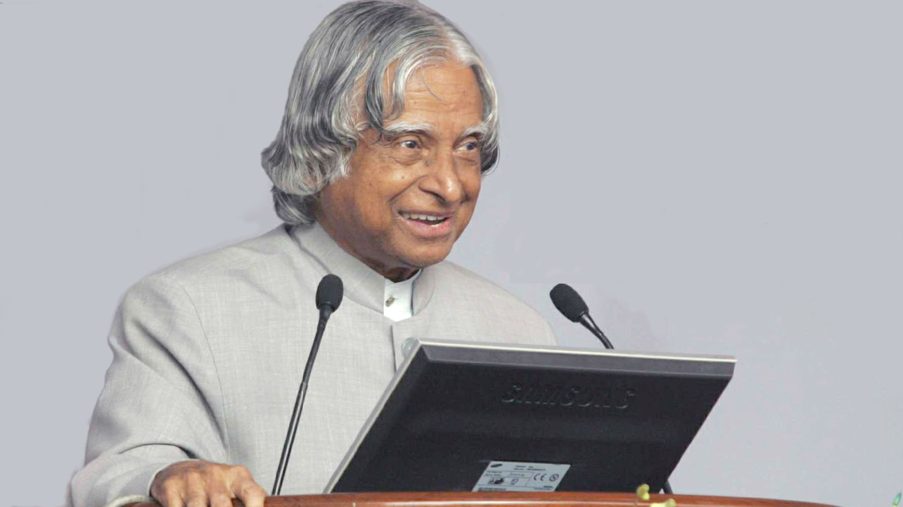

A.P.J. Abdul Kalam, the 11th President of India and a pioneer of the country's space and missile programmes.
"Dr. Kalam uniquely combined the honesty of a child with the energy of a teenager and the maturity of an adult."